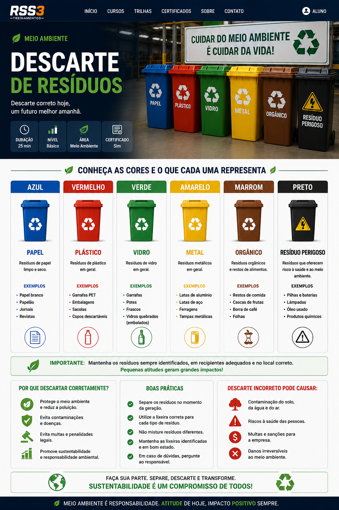

Duração
25 minutos
Nível
Básico
Área
Meio Ambiente
Categoria
Gestão de Resíduos
O que é descarte correto?
O descarte correto consiste em separar resíduos de acordo com sua categoria, evitando contaminações, acidentes e impactos ambientais.
Cores dos resíduos
A imagem abaixo mostra as cores utilizadas para identificação correta de resíduos e materiais descartados.

Principais cores e significados
Azul
Papel e papelão.
Vermelho
Plásticos.
Verde
Vidros.
Amarelo
Metais.
Marrom
Resíduos orgânicos.
Preto
Resíduos perigosos.
Boas práticas ambientais
Consequências do descarte incorreto
Contaminação
Poluição do solo, água e ar.
Acidentes
Riscos à saúde e segurança.
Multas
Penalidades ambientais.
Impacto ambiental
Danos ao meio ambiente.